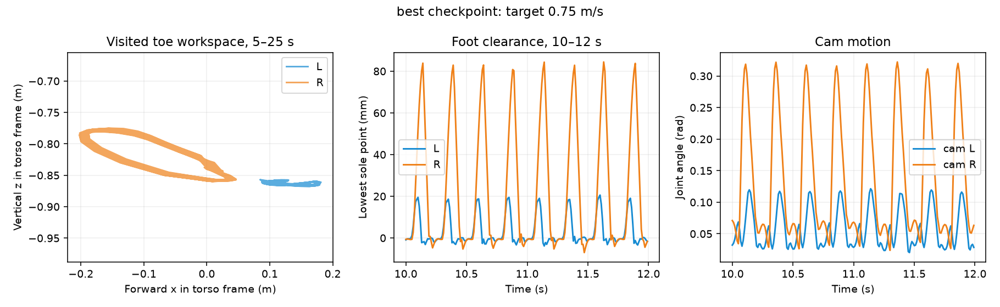
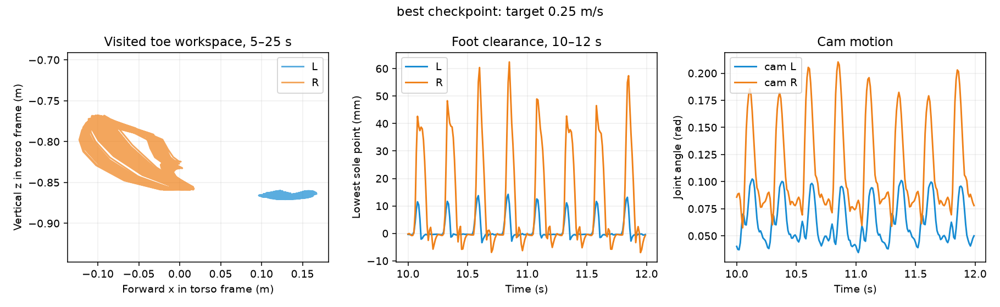
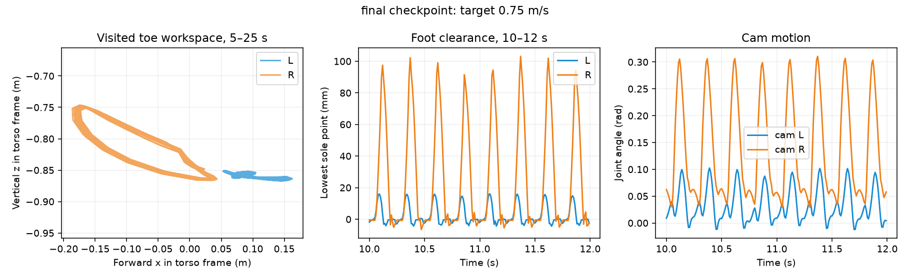
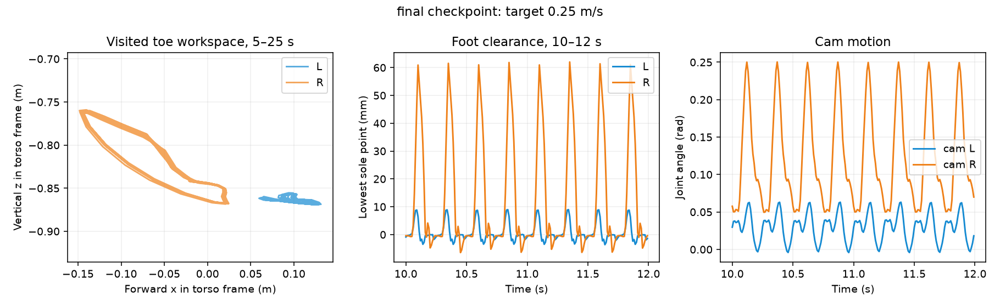
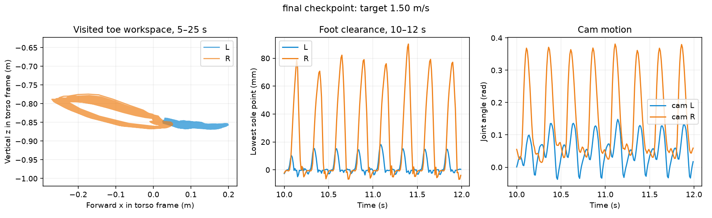

Blue = left; orange = right. Plots use the supplied CAD-v2 homing model. Workspace means positions actually visited by this policy, not the complete reachable envelope. Joint angles use the model's native signs; opposite signs can be physically symmetric. Forces are ground-on-foot, in world coordinates (positive z upward); forces the foot exerts on the ground have the opposite sign. Current is estimated phase/joint-equivalent current tau/Kt, not measured battery current. Summaries use 5–25 s; time-series panels zoom to 10–12 s.
Reward changes and baseline findings · Videos · All numerical results




